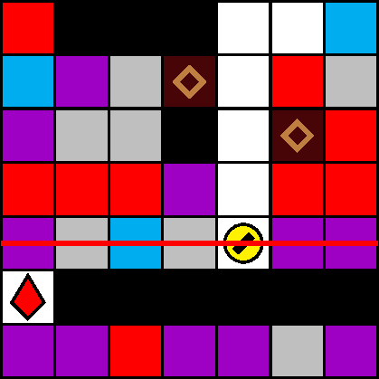

一般指針
愚形・這い（横レーザー）

指針
レーザーの出現タイミングは常に計算します．横レーザーステージにおいては，画面下方に特に注意し，塊や壁（特にパターン WL, WR など水平に複数個が連結したもの）の直上には可能な限り留まりません．
解説
即座の潜行は下方のブロックを破壊すれば可能である一方，即座の上昇は一般に困難です．図 3.4.10.1 は，即座の上昇が困難な地形の例です（犬直左の白石を破壊して紫石の着地を待つと上昇は可能ですが，横レーザーの照射予告には間に合わない場合があります）．犬の深度に横レーザーが予告されたとき，回避は主に潜行によってなされることになります．このため，横レーザーの予告直前において，犬は塊や壁の直上ではなく，（有色）石の直上に位置するべきです．潜行によって当該地形に進入してしまう場合は，無理に潜行せずにレーザーの予告（と照射）を待つのも有効な手段です．なお，横レーザーの照射間隔は（レーザー猶予を含めて）約 300/60 秒です．